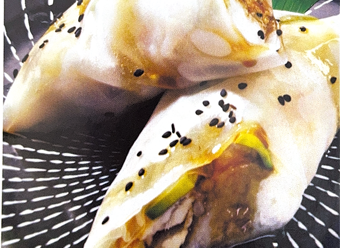
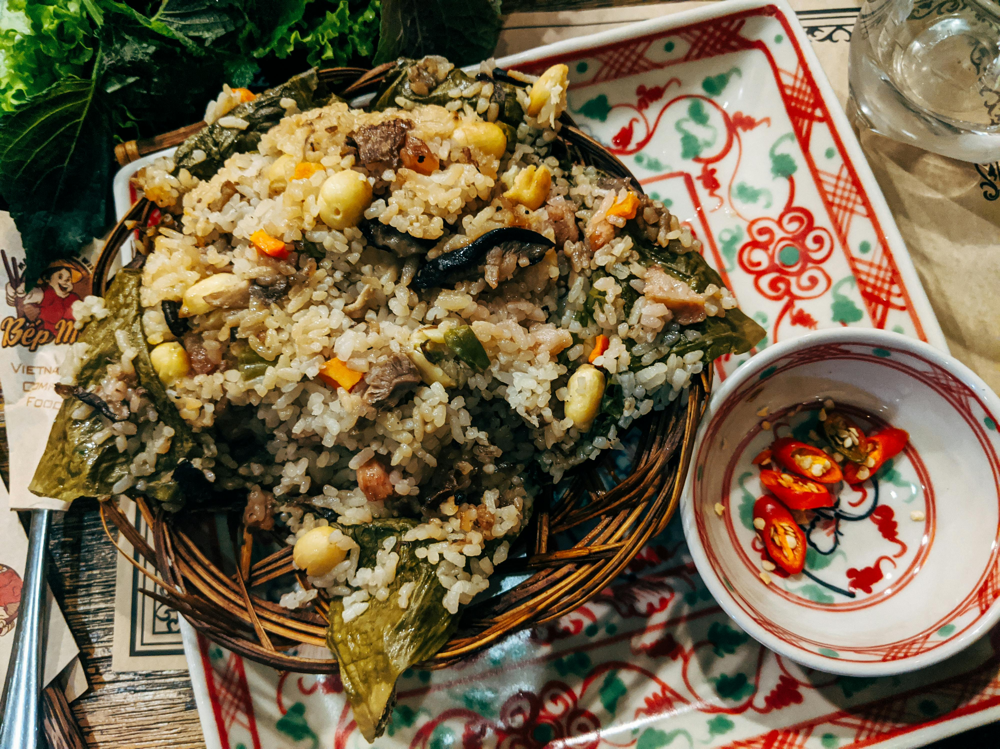

Tacos de Hoja de Arroz:
Ingredientes
- 8 hojas de arroz
- 200 g de pechuga de pollo en tiras (o tofu para opción vegana)
- 1 zanahoria en julianas
- 1 pepino en julianas
- ½ aguacate en rodajas
- 4 hojas de lechuga
- 2 cdas de salsa de soya
- 1 cda de aceite de sésamo
- 1 cdita de jengibre rallado
- 1 cdita de miel (opcional)
- Semillas de sésamo y cebollín picado (para decorar)


Pasos para preparar tacos con hojas de arroz
- Hidratación: Sumerge hojas de arroz en agua tibia hasta que estén blandas.
- Relleno: Coloca tus ingredientes favoritos (proteínas, verduras, etc.) en el centro de cada hoja.
- Enrollado: Dobla los lados hacia adentro y luego enrolla desde abajo para formar el taco.
- Servir: Disfruta con tu salsa preferida.